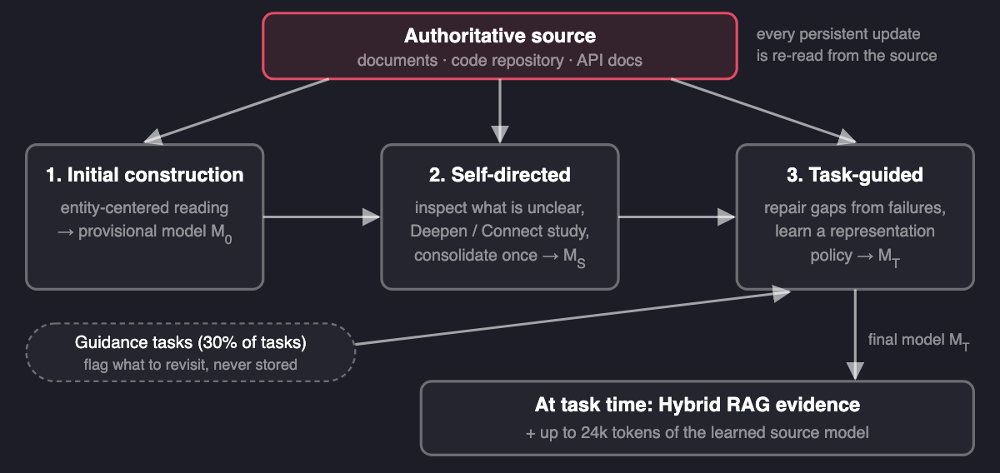
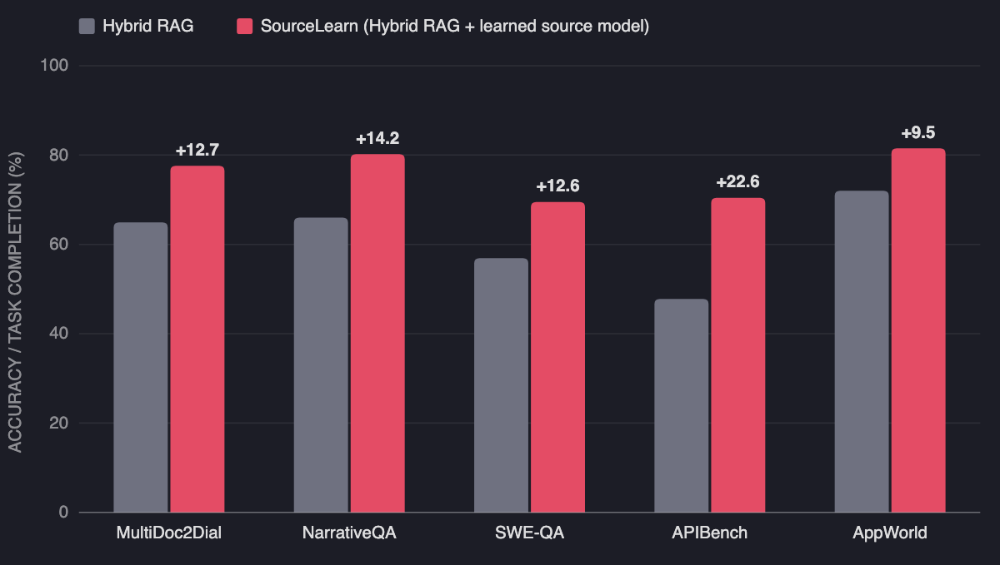

RAG That Learns Over Time: Source Learning for LLM Agents
When an agent uses the same documents again and again, it can build a lasting understanding of them, and that understanding beats retrieval alone.
By Lucheng Fu and Haohan Wang · · About our 2026 arXiv preprint (arXiv:2610.02150)
Most retrieval-augmented generation (RAG) systems are just as good on their hundredth question about a document collection as on their first. They retrieve passages, answer, and forget how those passages fit together. Can we build RAG that learns over time instead? Our answer is yes. In From Knowledge Access to Source Learning: Developing Source-Specific Competence (Fu et al., arXiv 2026), researchers at Georgia Tech, the University of Illinois Urbana-Champaign, and UCLA introduce SourceLearn. It keeps a persistent, revisable “source model” of one source and refines it through self-study and task feedback. Across five benchmarks and three LLM backends it was best in 13 of 15 settings, up to 22.6 points above Hybrid RAG.
Key findings
- In the 2026 SourceLearn paper (arXiv 2610.02150), a learned persistent source model added to Hybrid RAG gave the best result in 13 of 15 benchmark–backend settings, with a peak gain of 22.6 points over Hybrid RAG (APIBench, GPT-5.6-Luna).
- With GPT-5.6-Luna, SourceLearn improved over Hybrid RAG by 14.3 points on average across MultiDoc2Dial, NarrativeQA, SWE-QA, APIBench, and AppWorld; the averages were +4.9 with gpt-oss-120b and +13.4 with DeepSeek-V4.1-Flash.
- When the gold document was removed from retrieval on MultiDoc2Dial, Hybrid RAG lost about 25 points while SourceLearn lost about 8, according to the SourceLearn paper.
- SourceLearn's source model is not just a summary: its coverage of facts that later test questions needed rose from 23.2% to 40.0% during learning, and answer accuracy rose from 67.5% when none of those facts were covered to 86.6% when all were.
Why doesn't RAG get better with repeated use of the same documents?
Picture an agent that answers questions about one company's API documentation all day. Each query triggers a fresh search: find the closest chunks, paste them into the prompt, answer. If question 40 needs the same subtle rule about call prerequisites as question 3, the model has to rediscover that rule from raw text again. Nothing it worked out on question 3 carries over.
Two families of methods partly address this. Structured source representations such as RAPTOR (hierarchical summaries) and HippoRAG 2 (graph-based associative retrieval) organize the source once, up front. Agent memory methods such as Agent Workflow Memory (AWM) store lessons from past tasks. The SourceLearn paper argues that both miss the same thing. One kind builds the representation once and never revises it. The other keeps what the agent learned from tasks rather than what it learned about the source. Repeated access to a source does not by itself produce understanding of it.
What is the difference between RAG, agent memory, and source learning?
| Approach | What it keeps between tasks | Where persistent facts come from |
|---|---|---|
| RAG (e.g., Hybrid RAG) | An index of the source; nothing learned | The source, retrieved per query |
| Static source structure (RAPTOR, HippoRAG 2) | A summary tree or graph built once | The source, processed once |
| Agent memory (AWM) | Workflows or insights induced from past tasks | Task experience |
| Source learning (SourceLearn) | A source model that is revised over time | Always re-read from the source; tasks only decide what to revisit |
That last column is the design rule that sets SourceLearn apart. Task feedback can flag a gap, but the fix is written by rereading the authoritative source, never by storing a task's answer.
Key terms
- Source
- An identifiable body of external knowledge an agent consults repeatedly, such as a document collection, a code repository, or API documentation.
- Source learning
- Developing reusable, source-specific competence through repeated study and use of one persistent source, rather than re-accessing it from scratch for each task.
- Source-specific competence
- Reusable understanding of how a source's knowledge is structured, interpreted, and applied, including relations, governing conditions, procedures, and exceptions.
- Source model
- An explicit, persistent, revisable text representation of that competence, organized around entities, that is given to the model alongside normally retrieved evidence.
- Grounded reconstruction
- SourceLearn's update rule: an edit is committed only if it is supported by evidence from the source and keeps previously supported meaning.
How does SourceLearn build RAG that learns over time?
SourceLearn runs in three stages. The persistent source model it produces is used next to ordinary retrieval, not in place of it.

- Initial construction. An LLM reads the source entity by entity, using native structure such as code modules or document sections, and writes a provisional model of major entities, relations, procedures, and conditions. Low-level details stay in the source.
- Self-Directed Source Learning. The system rereads each part of the source next to its current representation and asks what the representation still fails to explain. A planner then picks a small set of study actions. Deepen investigates an unresolved aspect of one entity; Connect studies a dependency between two entities. Observations pile up and are written to the model once, through grounded reconstruction. The paper calls this pattern “read-many, write-once.”
- Task-Guided Source Learning. A set of guidance tasks (30% of each source's tasks, disjoint from the test tasks) shows what matters in practice. When a guidance task fails because required knowledge is missing from the model, that region of the source is reread and repaired (failure-guided local refinement). Across tasks, recurring lessons such as “keep this distinction explicit” are combined into a representation policy, and the whole model is recalibrated under it (cross-task representation learning).
At test time, the solver receives the same Hybrid RAG evidence as the baseline plus up to 24k tokens of task-relevant source-model content.
Does a learned source model beat RAG, RAPTOR, HippoRAG 2, and agent memory?
The evaluation spans five benchmarks: MultiDoc2Dial (government-agency documents), NarrativeQA (full books and movie scripts), SWE-QA (questions about Python repositories such as pytest and flask), APIBench (TorchHub, HuggingFace, and TensorFlow Hub documentation), and AppWorld (an interactive agent environment documented by 457 API specifications). All methods share the same backend, embedding model, and answer prompt. The table shows GPT-5.6-Luna results from the paper's Table 1 (accuracy %, or task goal completion for AppWorld).

| Method | MultiDoc2Dial | NarrativeQA | SWE-QA | APIBench | AppWorld |
|---|---|---|---|---|---|
| Hybrid RAG | 64.9 | 66.0 | 56.9 | 47.8 | 72.0 |
| RAPTOR | 71.2 | 68.1 | 50.8 | 61.9 | 75.6 |
| HippoRAG 2 | 66.3 | 66.6 | 62.7 | 55.2 | 77.4 |
| AWM (agent memory) | 65.1 | 62.1 | 56.7 | 62.8 | 66.7 |
| SourceLearn | 77.6 | 80.2 | 69.5 | 70.4 | 81.5 |
The baselines are uneven. RAPTOR helps on documents but falls 6.1 points below Hybrid RAG on code, and AWM helps on APIBench but hurts on AppWorld. SourceLearn improved on all five with this backend. Over all three backends it was best in 13 of 15 settings and second-best in one more. The two exceptions were both with gpt-oss-120b: SWE-QA, where HippoRAG 2 scored 56.7 against SourceLearn's 53.4, and AppWorld, where SourceLearn (27.4) fell 3.0 points below Hybrid RAG (30.4).
Ablations with GPT-5.6-Luna show both learning stages are needed. Dropping either Self-Directed or Task-Guided Source Learning lowered accuracy on all three QA benchmarks, and the initial model was the weakest.
Is the improvement just from giving the model more context?
This is the obvious objection, and the paper tests it directly. Each retrieval baseline was given the same per-question context budget as SourceLearn (16.5k to 23.4k evidence tokens, depending on the source). SourceLearn remained best on three of four sources and second on Sphinx, where HippoRAG 2 scored 73.5 against SourceLearn's 72.5. Extra context explains part of the gain, but not all of it.
The representation analysis shows what changes during learning. The source model moved away from isolated facts toward rules and procedures. Units stating explicit applicability conditions rose from about 30% of the initial model to 65–82% of the final one, depending on the source.
What happens when retrieval misses the right document?
This may be the most practical result. On MultiDoc2Dial, whose questions are labeled with the gold document, the authors removed that document from retrieval. Hybrid RAG fell by about 25 points; SourceLearn fell by about 8. With zero retrieved passages, the source model alone performed comparably to Hybrid RAG with all eight retrieved elements. Learning also carried over to new material. On parts of a source that no guidance task had touched, the gain over Hybrid RAG was 12.1 points, close to the 14.9-point gain on regions that guidance tasks had touched.
What this does not show
- Stable sources only. The paper studies persistent, authoritative, relatively stable sources. It does not test sources that change, contradict themselves, or contain noise. The authors list that as future work.
- The source model is not a substitute for the source. In a grounding audit of 120 sampled units per model, direct contradictions stayed at or below 1%. But after task-guided learning, 13.3% of audited units on a MultiDoc2Dial source were unsupported by their cited evidence, and many more were only partially supported. That is why SourceLearn always keeps the original source retrievable.
- Not a uniform win. With gpt-oss-120b, gains were smaller (+4.9 on average) and SourceLearn trailed Hybrid RAG on AppWorld.
- More study is not automatically better. Running four self-study cycles instead of one kept growing the model but did not consistently improve accuracy.
- Evaluation choices. QA answers were judged by an LLM (GPT-5.6-Luna), and the ablation used two sources per QA benchmark. The work is a preprint and has not yet been peer reviewed. This post does not compare the compute cost of building the source model with the cost of plain RAG; see the paper for implementation details.
Frequently asked questions
What is the difference between RAG and agent memory?
RAG retrieves passages from a source at query time, while agent memory stores what an agent took away from past interactions. Neither one explicitly builds an improving understanding of the source itself; source learning, as defined in the SourceLearn paper (arXiv 2610.02150), targets that third object: a persistent model of how one source is structured, interpreted, and applied.
Why doesn't RAG get better with repeated use of the same documents?
Standard RAG treats every query as a fresh access event: it retrieves chunks, answers, and keeps nothing about how those chunks fit together. The SourceLearn paper argues that this forces the model to reconstruct the same interpretation again and again, and that repeated use is an unused learning opportunity.
Is a learned source model just a summary of the documents?
According to the paper's analysis, no. During learning the share of source-model units with explicit applicability conditions rose from roughly 30% to 65-82%, and coverage of the facts future test questions needed rose from 23.2% to 40.0%, so learning reorganized what was represented rather than only compressing more text.
What happens when retrieval misses the right document?
On MultiDoc2Dial with GPT-5.6-Luna, removing the gold document from retrieval lowered Hybrid RAG by about 25 points but SourceLearn by only about 8. With no retrieved evidence at all, the learned source model alone performed comparably to Hybrid RAG with eight retrieved elements.
Citation
@article{fu2026sourcelearn,
title = {From Knowledge Access to Source Learning: Developing Source-Specific Competence},
author = {Fu, Lucheng and Xia, Kejing and Wang, Yiyang and Jin, Yiqiao and He, Jinjin and
Yang, Xiyuan and Liu, Haoxin and Yu, Ye and Jin, Haibo and Xiao, Yijia and
Lee, Wenke and Prakash, B. Aditya and Wang, Haohan},
journal = {arXiv preprint arXiv:2610.02150},
year = {2026}
}Related from our lab
- Agent Primitives: reusable latent building blocks for LLM multi-agent systems
- How retrieved content shapes rankings in LLM-based search (CORE explained)
- From parameter learning to prompt learning: the evolution of prompt optimization
- When more chain-of-thought reasoning hurts LLM accuracy
- Full list of DREAM Lab publications
Paper: Lucheng Fu, Kejing Xia, Yiyang Wang, Yiqiao Jin, Jinjin He, Xiyuan Yang, Haoxin Liu, Ye Yu, Haibo Jin, Yijia Xiao, Wenke Lee, B. Aditya Prakash, Haohan Wang. “From Knowledge Access to Source Learning: Developing Source-Specific Competence.” arXiv:2610.02150, 2026. Georgia Institute of Technology, University of Illinois Urbana-Champaign, and University of California, Los Angeles.
Code: github.com/luchengfu6/SourceLearn · Project site: sourcelearn.github.io